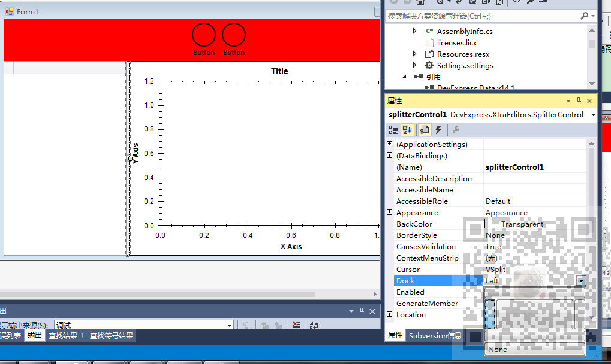

原文出处:本文由博客园博主霸道流氓提供。
原文连接:https://www.cnblogs.com/badaoliumangqizhi/p/11732537.html
原文连接:https://www.cnblogs.com/badaoliumangqizhi/p/11732537.html
场景
Winform控件-DevExpress18下载安装注册以及在VS中使用：
https://blog.csdn.net/BADAO_LIUMANG_QIZHI/article/details/100061243
参照以上将DevExpress安装并引进到工具箱。
在进行页面设计时通常会使用分隔条使窗体内的Panel等控件可以拖放。
那么DevExpress的分隔条控件SplitterControl是如何使用的。
注：
博客主页：
https://blog.csdn.net/badao_liumang_qizhi
关注公众号
霸道的程序猿
获取编程相关电子书、教程推送与免费下载。
实现
在上面已经成功安装DevExpress后，在设计页面打开工具箱搜索SplitterControl
拖拽一个控件将其放在要使用分隔符的内部，注意要放在要使用分隔符的两个Panel的其中一个
的控件的内部，默认是靠在控件左侧。
可以通过设置其Dock属性调整其在控件内的位置。

分隔符效果